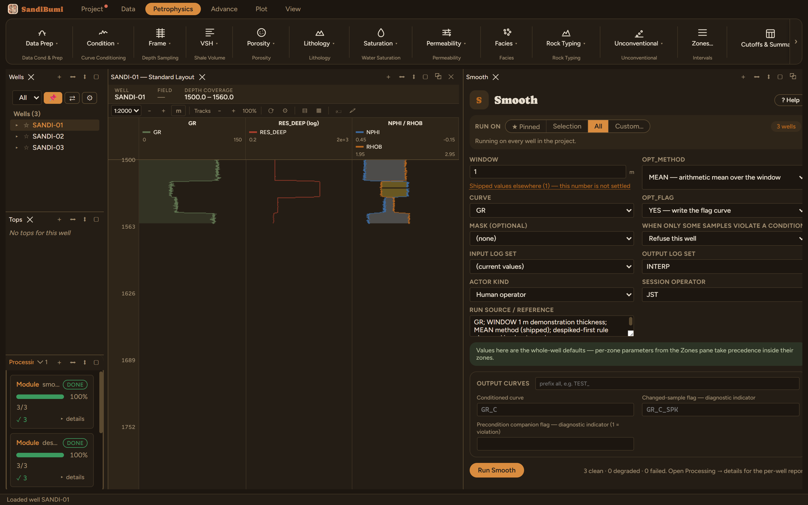

Smooth averages a curve over a window stated as a thickness, writing the
result beside the original with a changed-sample flag. Reach for it when
sample-to-sample noise obscures the trend a later step needs: a blocky input
for a crossplot, a sonic destined for a synthetic seismogram, a curve whose
derivative you are about to take. Despike first; a smoother spreads a spike
it was never designed to remove.
The physics
Three methods, each with a character:
MEAN: arithmetic mean of the live samples in the window. The
default and the strongest noise reducer, and it ramps across step edges.
MEDIAN: the window median. Keeps a step edge where a mean would
ramp across it, at the cost of less noise reduction in between.
SAVGOL: a local quadratic least-squares fit evaluated at the
sample, fitted on the real depth-value pairs rather than the textbook
fixed coefficients, which assume even sampling. Preserves curvature
(peaks keep their height better than a mean).
WINDOW is a thickness, so the trade is stated in rock: everything thinner
than the window is treated as noise and averaged away.
The picks and why
WINDOW 1 m, MEAN: a light demonstration touch. Run live on
these wells: the gamma-ray standard deviation moves from 29.72 to
29.54 gAPI, barely anything, because a 1 m mean at 0.15 m
sampling averages about 6 samples of a mostly coherent log. Widened to
3 m the deviation drops to 29.01, and the number to
watch is not the deviation but the beds: 3 m is wider than several
real beds in this section, and they begin averaging into their
neighbours.
The changed-sample flag reads 1 at every sample here, which is worth
understanding rather than worrying about: a mean smoother moves nearly
every value at least infinitesimally, and the flag records change, not
damage.
Step by step
Despike the curve first if the delivery is spiky, and feed the despiked
output in.
Open Petrophysics ▸ Condition ▸ Smooth.
Set WINDOW below your thinnest keepable bed and pick the method by the
character you need at edges.
Fill the custody line and press Run Smooth.
One thickness, one method. The output sits beside the original,
never in its place.
Reading the result
3 clean. Compare the deviations in the Database Inspector, and more
importantly compare the curves in a log view at a bed you know:
SELECT round(stddev(value), 3) FROM computed_curves
WHERE curve_name = 'GR_C' AND NOT isnan(value)

A light touch: the statistics barely move, and that is what a
correctly sized window looks like on a clean log.
QC and pitfalls
Judge a smoother at bed boundaries, not in the middle of thick sands.
The failure mode is a ramp where the rock has a contact, and a porosity
computed from a ramped density invents transition rock.
Never feed a smoothed curve to a module that reads amplitudes of thin
features (bad-hole detection, thin-bed work, bed detection). Smoothing is
for trend consumers.
The output name follows the input (_C suffix), shared across the
Condition family: run Smooth on the raw curve after Despike wrote its
output and the despike result is overwritten. Chain by selecting the
previous output as this module's input.